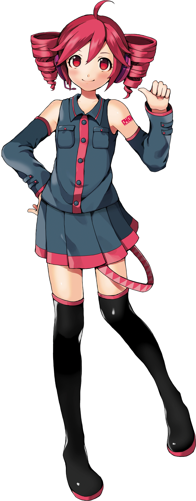
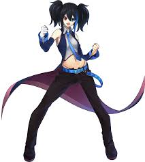
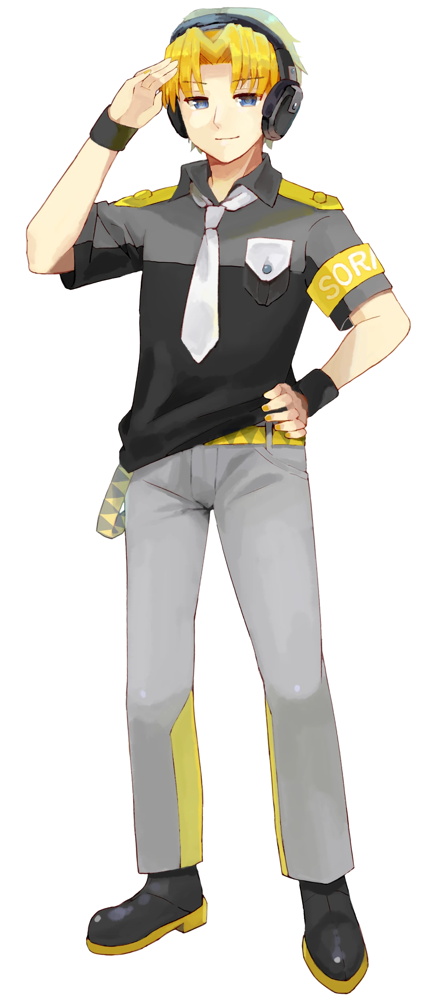

Nombre:Kasane Teto
Desarrollador:usuarios del foro japonés 2ch y el grupo creativo Twindrill
Proovedor de voz:Nobuyo Oyama
Fecha de lanzamiento:1 de abril de 2008
Motor/Software:Synthesizer V AI,UTAU
Idioma:japonés,inglés y otros idiomas
Género:Femenino
Edad:31 años

Nombre:Yokune Ruko
Desarrollador:UTAU
Proovedor de voz:Yuu Raichi (Voz Masculina), Yuu Hikachi (Voz Femenina)
Fecha de lanzamiento:17 de noviembre de 2008
Motor/Software:UTAU
Idioma:japonés,inglés
Género:Andrógino
Edad:12 años (oficialmente permanente)

Nombre:Suiga Sora
Desarrollador:UTAU Inc.
Proovedor de voz:Arikawa Yuu
Fecha de lanzamiento:16 de septiembre de 2008.
Motor/Software:UTAU
Idioma:japonés
Género:Masculino
Edad:19 años (oficialmente permanente)